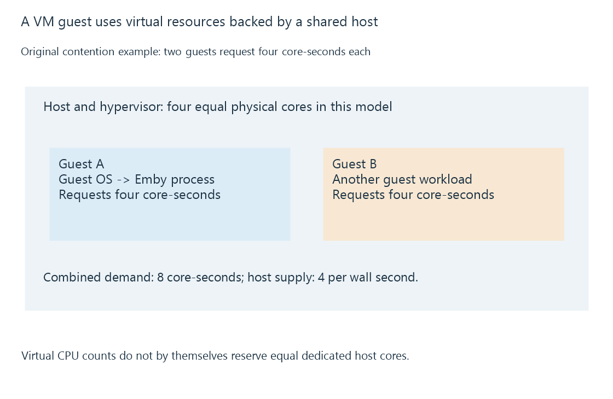

Virtual machines and the guest server environment
A virtual machine runs a guest operating system on virtualized hardware, so the server depends on both guest configuration and host resources.
A virtual machine presents hardware to a guest operating system. Emby Server runs inside that guest, while the hypervisor and host supply its processor time, memory, storage and devices.
This is a different boundary from an ordinary application process. The guest has its own operating-system environment and its own view of the hardware made available to it.

The guest has paths and identities of its own
| Resource | Guest's view | Host relationship |
|---|---|---|
| CPU | Virtual processors | Scheduled on available host execution resources |
| Memory | Assigned guest memory | Backed by host memory under hypervisor policy |
| Storage | Virtual disks or exposed devices | Files, devices or storage services managed below |
| Network | Virtual interface | Connected through the host's configured virtual network |
| GPU | Device interface presented to guest | Requires a supported virtualization or assignment arrangement |
A host directory is not automatically a guest library path. The guest needs a supported route to that storage, and its server identity must have access there.
Eight virtual CPUs are not eight reserved cores
A VM can advertise eight virtual processors while competing with other VMs for physical time. The host's scheduling, limits and reservations determine the result. A virtual-CPU count therefore describes the guest's available execution contexts rather than a universal physical allocation guarantee.
In an original contention model, two VMs each request four core-seconds of work during a second, but the host has four equal cores. Their combined demand is eight core-seconds against four available. No scheduling policy can supply all that demand in that interval.
Memory overcommit and storage contention can create other waits that a guest sees as slow operations. Measurements inside the guest may not reveal which competing host workload caused them.
Hardware media access crosses the boundary
A virtual display adapter does not automatically expose a physical GPU's video decoder or encoder. Device assignment or a supported virtual-GPU arrangement, guest drivers and application support all participate.
A server can therefore start and stream directly while hardware transcoding is unavailable in the guest. Verify the actual device interfaces visible there rather than deriving codec support from the host's GPU name.
VM snapshots have their own consistency scope. Capturing virtual disks does not universally equal an application-aware backup of a running Emby server. Application-data backups explain the stored-state requirement separately.
See Also
- Software containers and shared-kernel isolation
- Persistent application data across server recreation
- Application-data backups and consistent server state